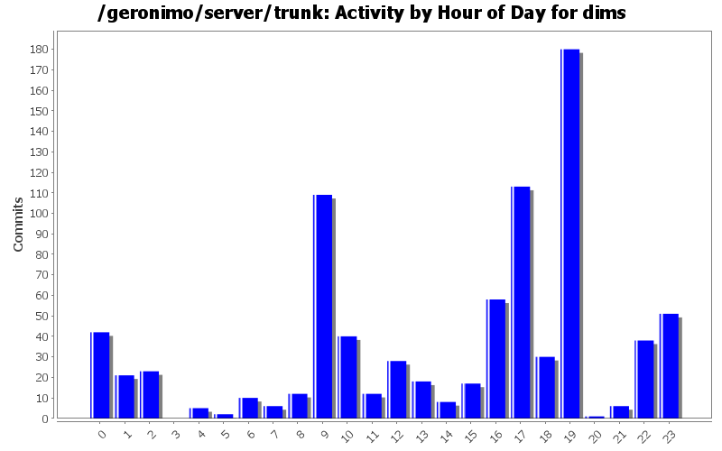
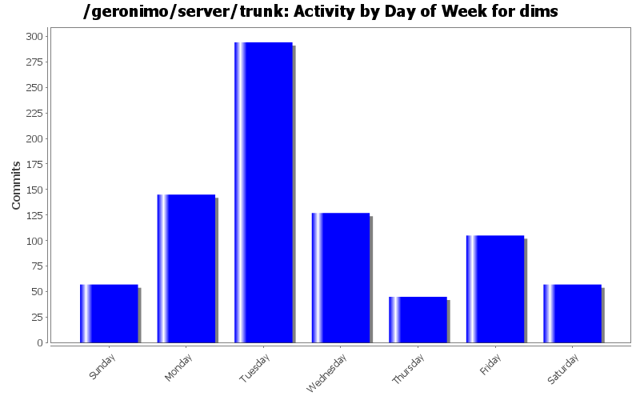
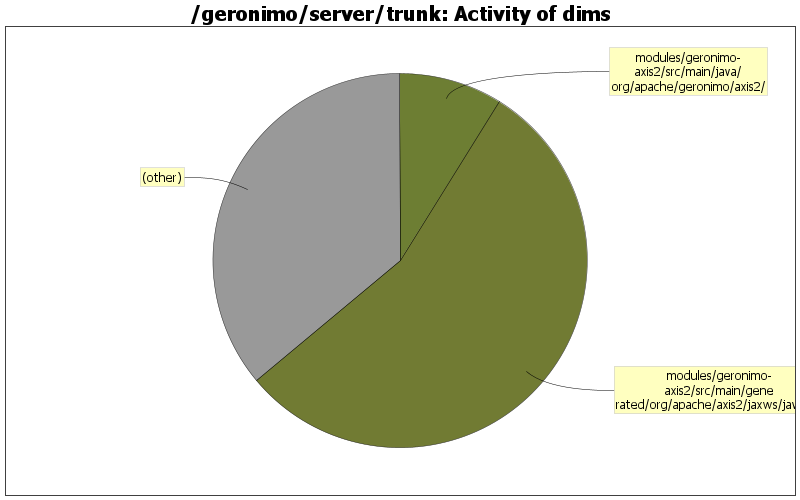

better change the scope to test just in case
1 lines of code changed in 1 file:
add woodstox dependency
4 lines of code changed in 1 file:
forgot to switch from axis2-saaj to saajri jar
3 lines of code changed in 1 file:
remove xalan dependency
0 lines of code changed in 2 files:
don't need xalan
0 lines of code changed in 1 file:
cleanup axis2 pom's/plan's
30 lines of code changed in 4 files:
Axis2 needs one more jar
16 lines of code changed in 3 files:
Switch Axis2 over to sun's saaj jars as well. Once we stabilize, we can switch back to see what breaks with Axis2's saaj impl jars
16 lines of code changed in 4 files:
i see handler-chain under some conditions getting passed in, so let's try that as fallback
6 lines of code changed in 1 file:
oops! thanks jdillon
1 lines of code changed in 1 file:
log error first, then try to send the fault back (and don't print fault on output stream when you are trying to send back the fault)
2 lines of code changed in 1 file:
remove print stack trace
1 lines of code changed in 1 file:
Fix for GERONIMO-3102 - Axis2: servicename and portname overwrite (from wsdl to annotation)
14 lines of code changed in 1 file:
Fix for GERONIMO-3100 - Axis2: remove hardcoded 12 jars in Axis2BuilderUtil
35 lines of code changed in 2 files:
- trying to fix GERONIMO-3097 by eliminating unnecessary code.
- We don't need wsdl20 support, also avoids saving the wsdl into a byte array (which in turn helps with problems loading schemas relative to wsdl)
32 lines of code changed in 2 files:
update to released versions
14 lines of code changed in 1 file:
Avoid java.lang.ArrayIndexOutOfBoundsException
1 lines of code changed in 1 file:
Fix for GERONIMO-3092 - Axis2: after wsgen tool, need to scan the directory for the generated wsdl file
113 lines of code changed in 2 files:
Fix for (GERONIMO-3094) Axis2: need to build the classpath and pass it onto wsgen
39 lines of code changed in 2 files:
Fix for GERONIMO-2998 - Geronimo Axis2 Adding Fault Handling for WSDL Provided
8 lines of code changed in 1 file:
(115 more)